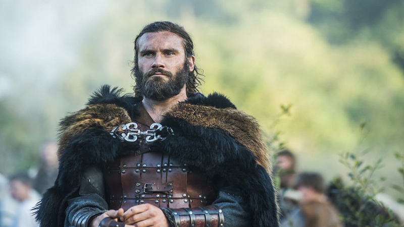

Рагнар
Рагнар Лодброк (др.-сканд. Ragnarr Loðbrók) - полулегендарный
скандинавский конунг из рода Инглингов, ключевой персонаж
сериала.
Умелый воин и амбициозный вождь, Рагнар на протяжении почти всей
своей жизни следует пути викинга. Рассекая море в поисках боевой
славы и наживы, он стремится обрести новые знания, открыть
неизвестные земли и изменить нелегкую судьбу своего народа,
живущего в суровых условиях Скандинавского полуострова.
Лагерта
Лагерта (др.-сканд. Hlaðgerðr) - известная скандинавская
воительница, упомянутая в хрониках Саксона Грамматика, первая
жена датского морского конунга Рагнара Лодброка.
Эта отважная и независимая женщина способна проявлять железную
решимость, когда дело касается ее личного достоинства, семьи или
власти. Лагерта также известна своим милосердием и
благородством. В сериале Лагерта активно участвует в походах
викингов, колонизации ими новых земель и междоусобных распрях
скандинавских вождей.
Ролло
Ролло (др.-сканд. Hrólfr) - известный вождь викингов, первый
герцог Нормандский, основатель Нормандской династии. Старший
брат Рагнара Лодбро́ка.
Знаменитый своей силой, бесстрашием и диким, импульсивным
нравом, он активно участвует в разорительных набегах викингов на
страны Европы. Безуспешные попытки возвыситься на фоне
влиятельного и удачливого брата приводят Ролло к ожесточенной
внутренней борьбе, которая делает его несчастным и вынуждает
искать пути выхода из кризиса.
Аслауг
Аслауг (др.-сканд. Aslaug Sigurðardóttir) - полулегендарная
скандинавская дроттнинг, упоминаемая в ряде средневековых саг. В
сериале - гётская аристократка, вторая жена Рагнара Лодброка и
правительница Каттегата.
Аслауг обладает даром провидицы и иногда способна предугадывать
будущее посредством видений. Мать знаменитых скандинавских
вождей - Уббе, Хвитсерка, Сигурда Змееглазого и Ивара
Бескостного, рожденных от Рагнара.
Бьёрн
Бьёрн Железнобокий (др.-сканд. Björn Járnsíða) - полулегендарный
скандинавский конунг, основатель шведской королевской династии
Мунсё. В сериале - сын Рагнара Лодброка и Лагерты.
Сильный и решительный человек, Бьёрн намерен стать великим
воином, лидером и первооткрывателем. Он полностью разделяет
жажду своего отца к приключениям и поддерживает его, регулярно
участвуя в грабительских набегах викингов.
Ивар
Ивар Бескостный (др.-сканд. Ívarr hinn Beinlausi) -
полулегендарный вождь датских викингов, известный неистовством в
бою. В сериале - четвертый сын Рагнара Лодброка и Аслауг,
получивший свое прозвище из-за нарушенного остеогенеза.
Самый агрессивный и неуравновешенный среди своих братьев. В
своем тщеславии он объявляет себя живым богом и устанавливает
кровавый культ собственной личности. Утратив власть, Ивар
избегает возмездия и скрывается на востоке, вынашивая планы
мести.